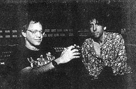

by Laura Harding
CD Review, 1993

If anyone asked a young, teenaged Danny Elfman what he wanted to do when he grew up the answer was always something to do with movies--anything, except write the music. Ironically, Elfman, lead singer of the band Oingo Boingo and innovative composer of such hit film scores as Dick Tracy, Batman, and Sommersby, believed he wasn't equipped for the music side of films. "I always considered myself a visual person," he says. "I believed music was the one thing you needed formal training for more than any other side of it."
Thankfully, Elfman, a self-taught musician, was coerced into making movie music by director Tim Burton and actor Paul Reubens (a.k.a. Pee Wee Herman) when the two were working together on Pee-Wee's Big Adventure. Burton and Reubens wanted a non-traditional composer for the film. According to Elfman, he didn't know why Burton selected him "but Tim obviously had more faith in me than I did. He's got very good intuition. He saw that there was the potential for me to work in this arena and halfway through the film I started to believe it too. It was one of the scariest things I had ever done." Since then, Elfman has collaborated with Burton on such hits as Batman (for which Elfman received a Grammy Award for Best Original Score), Beetlejuice, Edward Scissorhands (his favorite score), and Batman Returns. Their latest project, Tim Burton's Nightmare Before Christmas is a stop-motion animated tale about a lonely skeleton who lives in Halloweentown and attempts to impersonate Santa Claus after he comes across the warmth and joy of Christmastown.
The biggest difference for Elfman between the work he's doing for Nightmare and his other film scores is the extra effort he's put into it. Elfman has been developing the film with Burton for the last three years. Usually, Elfman will work with a primary theme and one or two secondary themes. With Nightmare he has 10 songs and 10 melodies. "The hard part was trying todecide moment by moment of the score which themes to choose from and how to blend it all together. So manyt cues were starting out of one song and ending into another song that they had to weave right out of one and slowly work into a new melody and then ease into the next song. It was surprisingly tricky, but I don't think there will be anything in the score where one will go, "Oh, I didn't think Danny could do that," Elfman says.
Along with composing the music for Nightmare, Elfman sings all the songs, produced the score and album, and is the voice for lead character Jack Skellington. While doing the demos Elfman became very attached to Jack's voice. "He (Jack) sings five songs in the film and I just got really into it. I felt a strong personal relationship with the character," he says.
Elfman says the entire movie was fun to make and will be fun for viewers of all ages. He compares it to The Grinch Who Stole Christmas and emphatically disagrees with anyone who feels Nightmare will be too disturbing for children. "That is the most ridiculous thing I have ever heard," he says. "Was Beetlejuice disturbing? This is much less disturbing than Beetlejuice. Adults have no idea what is or isn't disturbing for kids. The fact that you've got creepy-looking cartoony characters being disturbing for kids is preposterous." Elfman contends the movie is done in a very lighthearted spirit and the fact that Santa Claus is kidnapped isn't upsetting because he's returned safe and sound. Christmas is saved and everyone is happy. "No matter what you do, something is going to be disturbing to someone somewhere," he says.
The light-heartedness and fun surrounding Nightmare is more than likely due to the comfortable and relaxed atmosphere between Burton and Elfman. "Communicating with Tim is very easy for me," Elfman explains. "There was no struggling in the creation of the songs for Nightmare. It was just fun. He would come over and tell me some of the story and I'd start hearing the song in my head before he even left the room. Sometimes I'd have to almost push him out of the house to write it down." According to Elfman, he needs the communication with a film's director to be more visual than verbal, whish is why he and Burton work so well together. They both tend to have an intuitive sense of what each other wants from the score and the movie. "I'll read a script and I'll get an idea if I like the story, but I won't hear any music from reading a script. Where I'm gonna hear the music in my head is when I see how that scene was shot," he says. "I'll get a feel for some type of music that'll suddenly start playing just like a gramophone. The needle drops on and then I go,'oh that's wht it is'."
This ease of hearing music in his head is completely opposite from the work Elfman does for his band, Oingo Boingo. When Elfman writes for the band he's writing for himself and trying to please only himself as a writer. He says the process often takes much longer than film composing because when writing for the band he has to write about something personal.
"In writing the songs for Nightmare there was a story, so I knew exactly what I was writing about and I didn't have to sit there and bash my head against the wall saying 'what am I gonna write about?'"
The only effect Elfman's composing has had on Oingo Boingois delaying the release of the band's new album. Elfman says he's always tried to keep his film orchestral work separate from his work with the band and has made a conscious effort to keep orchestral-type works from appearing on Oingo Boingo albums. But due to his 14-year-old daughter's interest in the Beatles, Elfman is using an orchestra in a fun way on the new Oingo album. And after that? he's hoping to try his hand at making his own spooky movies. Ghost movies, as opposed to horror films, are Elfman's true love. He's already completed three scripts, including Julian, a "scary little romp with ghosts and children." Elfman's own favorite movies include The Haunting, The Innocence, moments from The Shining, and a number of Japanese samurai movies.
If Julian is made into a feature film, Elfman will direct and compose for it. "It's one of my motivations for wanting to direct, to have films that I can score. There are very few films around that I want to score or that I will be scoring. So I either start creating projects for myself or I'm gonna find myself working on very few films," he laughs. Having already scored 19 films, the chances of that seem rather slim.